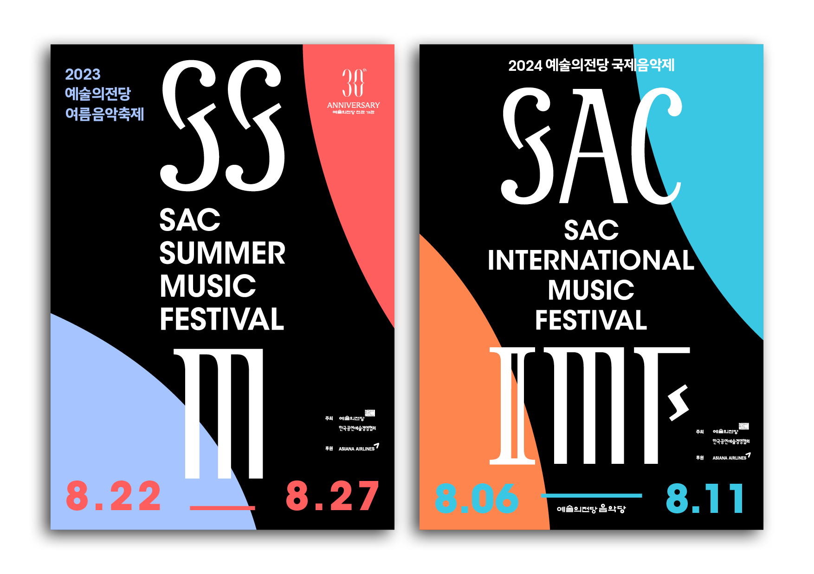
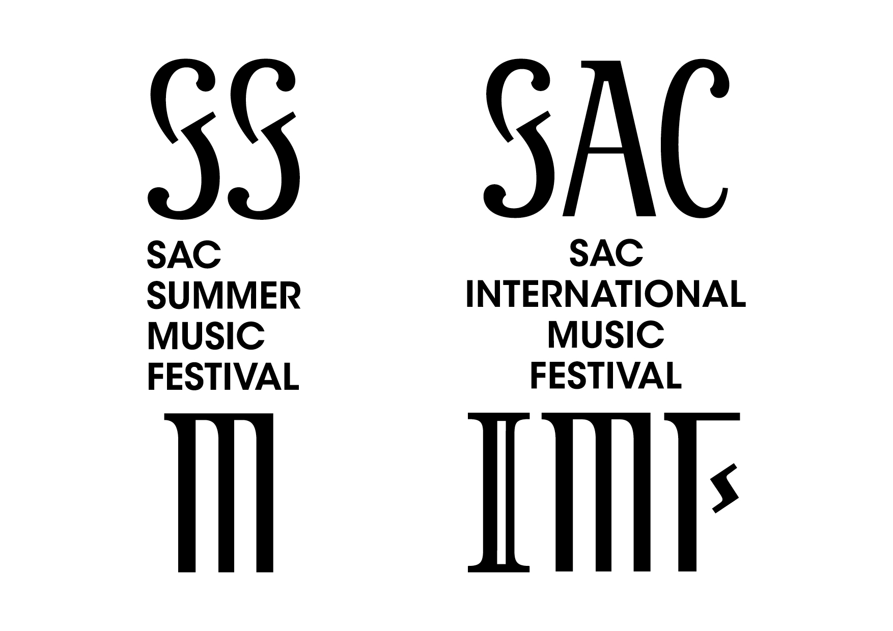
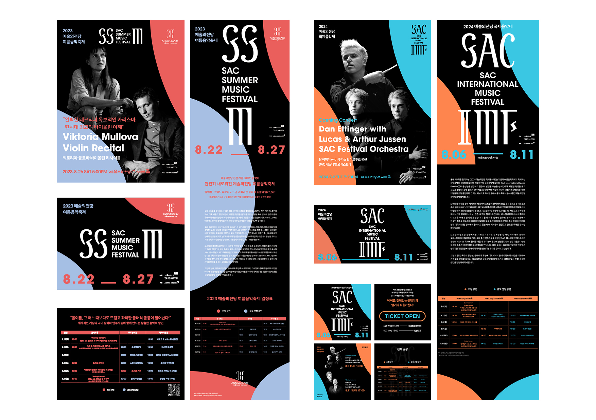
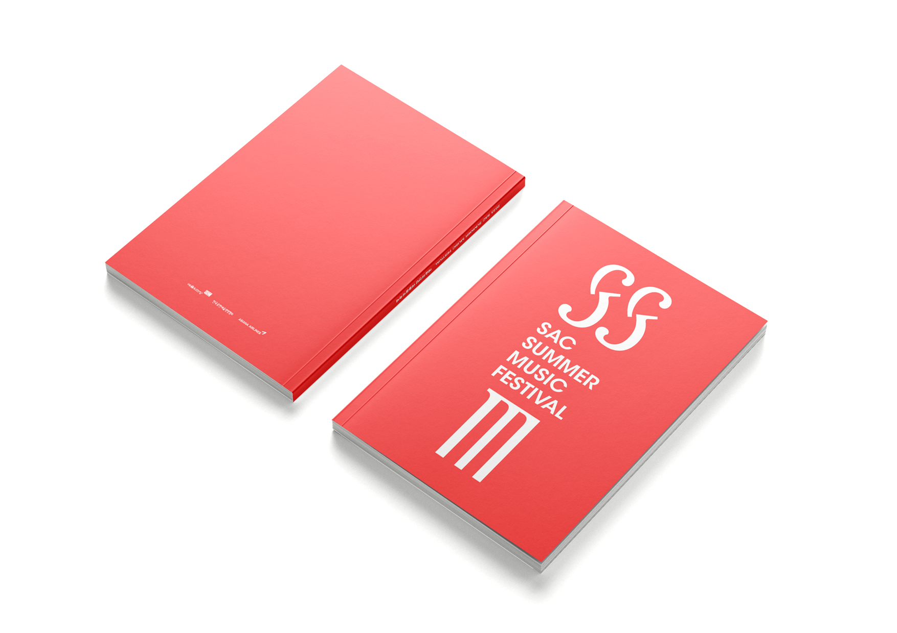
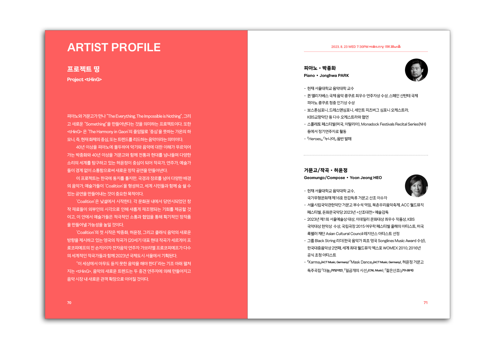
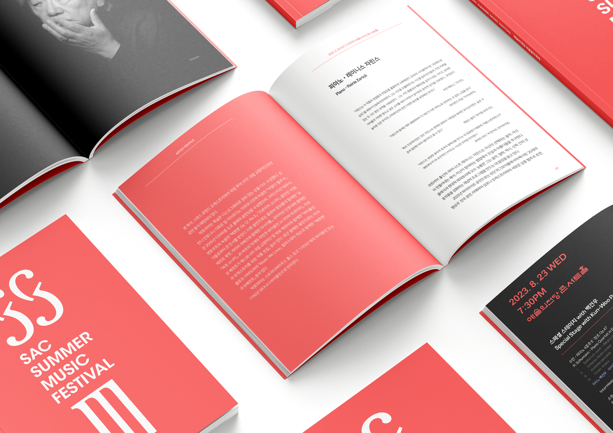

2023 예술의전당 여름음악축제와 2024 예술의전당 국제음악제를 위한 그래픽 디자인.
클래식 음악이 가진 무게감과 동시대 타이포그래피의 감각을 결합하여 포스터 시스템을 개발했다. 축제 이름의 이니셜—SS, SAC—을 대형 레터링의 중심 모티프로 삼고, 유기적인 형태와 대비되는 색채 체계를 통해 각 음악제의 고유한 분위기를 표현했다.
두 음악제에 각각 구별되는 색채 팔레트를 부여하면서도 타이포그래피 구조는 일관되게 유지하여, 예술의전당 음악 브랜드 전체로서의 연속성을 확보했다.




